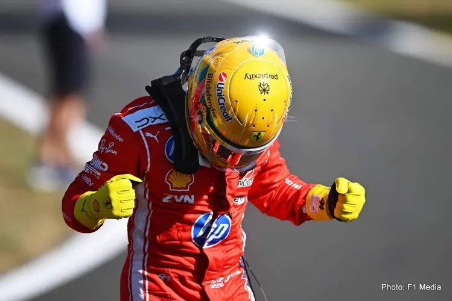

Lewis Hamilton quebrou o jejum e venceu o GP de Barcelona-Catalunha

Lewis Hamilton quebrou o jejum e venceu o GP de Barcelona-Catalunha após uma corrida cheia de reviravoltas e muita estratégia na pista espanhola.
Vitória de Patrão: Ele calou a boca dos críticos ao vencer o GP da Espanha, conquistando sua primeira vitória emocionante correndo pela Ferrari [Hamilton]. [1]
Estratégia Furada: No GP da Áustria, a Ferrari errou feio nos boxes, mas o Lewis usou toda a sua genialidade para escalar o pelotão e salvar um 5º lugar.
Fofoca Amorosa: Ele quebrou a internet ao assumir um romance com a Kim Kardashian, que foi até vista no paddock de Mônaco torcendo por ele! [1, 2]
O Oitavo Vem Aí: Aos 41 anos, ele avisou na Inglaterra que não vai se aposentar até conseguir o seu 8º título mundial. Ele está coladinho nos líderes do campeonato! [1]
George Russell e o Lando Norris entregaram tudo na Espanha e foram os reis do entretenimento ao lado do Hamilton! Eles jogam padel juntos na vida real, mas na corrida foi cada um por si.
George Russell: O Homem do Sábado (Mas Só do Sábado)
O George estava se achando o dono da Espanha no começo do fim de semana, miga!
A Pole Maravilhosa: No sábado, ele destruiu na classificação e conseguiu a pole position. Ele largou muito bem no domingo e parecia que ia sumir na liderança da corrida.
A Mercedes Sendo Mercedes: Só que a estratégia de duas paradas da Mercedes não deu muito certo contra as três paradas da Ferrari do Hamilton. Para piorar, no final da corrida, o Kimi Antonelli (companheiro dele) passou ele com tudo!
Sorte de Principiante? O George deu muita sorte porque, logo após ser ultrapassado, o carro do Kimi teve uma pane elétrica e quebrou. Com isso, o Russell herdou o 2º lugar e garantiu a dobradinha da equipe. Na entrevista oficial, ele estava bem aliviado!
🧡 Lando Norris: O Garoto da Recuperação
O Lando veio para a Espanha com uma sede de vitória absurda porque tinha quebrado o carro nas últimas duas corridas.
Sextou com S de Sucesso: Na sexta-feira, ele foi o mais rápido dos treinos livres e deixou todo mundo assustado com o ritmo da McLaren.
Escalada de Milhões: No domingo, ele largou em 4º lugar. A corrida dele foi puramente paciência e talento! Ele foi poupando os pneus, fazendo ultrapassagens certeiras e escalando o pelotão de um jeito muito maduro.
Pódio Histórico: Ele cruzou a linha em 3º lugar coladinho no Russell! O mais legal é que, como o pódio foi Hamilton, Russell e Lando, a internet surtou porque fazia quase 60 anos que três pilotos britânicos não dividiam o mesmo pódio na F1! O Lando até brincou depois dizendo que eles "deram uma sortinha" com a quebra do Kimi, mas mereceram muito.
Guerra Fria na Mercedes: O George Russell estava se achando o rei da pista porque conseguiu largar na frente de todo mundo. Mas o Lewis Hamilton usou toda a sua experiência, cuidou melhor dos pneus e passou o companheiro de equipe na pista.
O Drama do Kimi: Se na Áustria ele brilhou, em Barcelona o garoto Kimi Antonelli conheceu o lado cruel da F1. Ele acabou abandonando a corrida (o famoso DNF) e saiu bem decepcionado com o carro.
Max Sem Pódio: O Verstappen tentou de tudo com a Red Bull, mas o carro dele simplesmente não tinha o mesmo ritmo das Mercedes e das McLaren. Ele teve que se contentar com um 4º lugar, bem longe da festa do champanhe.
Zica da Ferrari: Charles Leclerc teve mais um final de semana para esquecer. O carro dele quebrou e ele também teve que abandonar, deixando os torcedores italianos chorando no Twitter.
https://share.google/8gWoaoTeYrW7hn6gq
https://share.google/9gJiCbQBONhAvs6AK
https://share.google/SaTRR1ohqz0tWEZmh
https://share.google/O6Nb74Rxhf1LblttY